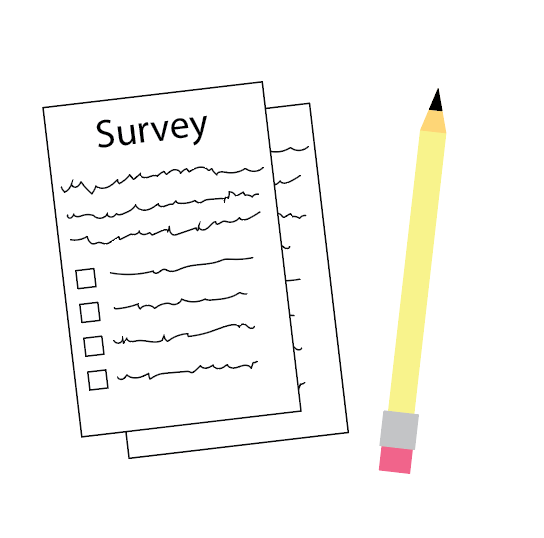

The literacy rate in Wales is a problem
Despite decades of research showing how important literacy is, we don’t know how many people in Wales can’t read. Though the current estimates suggest one in eight people have low literacy levels, this number is based on a survey over fifteen years old.
Other methods for tracking literacy rates are more up-to-date, but they present other issues with indirect measures, making literacy tricky to count.
It’s a problem for governments who need to decide what to spend money on and the needs of the country. And it’s a problem for people with poor literacy. Though they often find creative ways to cope, there are still some common problems.
We spoke to Read Easy UK, a national charity who offer support to adults learning to read, who along with other sources gave us information on common problems.
Scroll to begin the story.
Healthcare
According to Read Easy, a lot of the readers they have worked with have mentioned struggles with reading medication doses. Similarly, other organisations have described issues with accessing NHS care and reading medication leaflets.
Employment
Many jobs often require qualifications, making jobs difficult to come across. The Adult Literacy Trust says people with low literacy skills are twice as likely to be unemployed and earn 60% less than those with basic literacy skills on average.
Public transport
Public transport requires being able to read tickets and frequently changing timetables for navigation. More commonly, timetables and updates are moving online which can present further struggles.
Going out
Menus at restaurants, cafes, and bars present challenges for people who struggle to read. This coupled with the social expectations of the situation can make the challenge larger.
Voting
Literacy Mid-South describes how many struggling with literacy may face challenges voting. Voting is pivotal for social change, and though there are many audio and visual news sources, further information and candidates' stances may not be fully available in an accessible manner.
Appification
Social activities like booking hotels or public services which require online apps or forms can often be inaccessible to those who struggle with literacy.
Isolation
Due to the stigma associated with a lack of literacy, many sources such as The Literacy Foundation describe how many people struggling with literacy face isolation and struggle with low self-esteem.
How do we measure literacy?

Government Survey
Explore →
Adult Literacy Programs
Explore →
Literacy Rates in Prisons
Explore →
The UK Census
Explore →